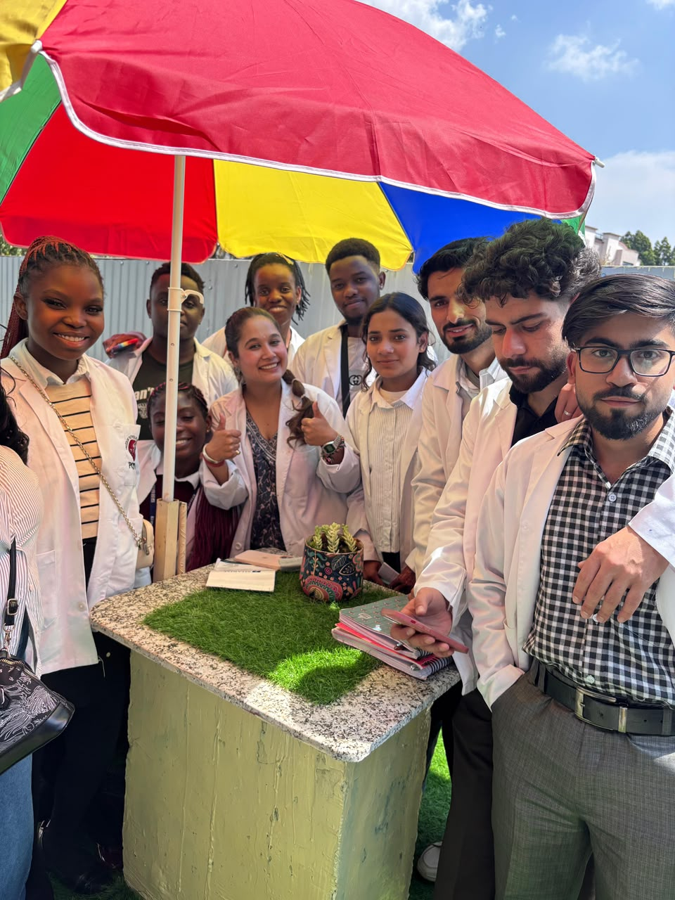

Industry Internship Applications Started

Practical experience is what turns classroom knowledge into a career. We are excited to announce that applications for our Industry Internship Program are now open, connecting students with real-world projects in biotechnology, research and AI-driven life sciences.
What the Internship Offers
- Hands-on work on real projects with mentorship
- Exposure to research, data analysis and laboratory workflows
- Guidance on professional communication and documentation
- A certificate and portfolio-ready project experience
- Networking with industry professionals and researchers
Who Can Apply
Students in their final years of undergraduate or postgraduate study in biotechnology, microbiology, biochemistry, computer science and related disciplines are encouraged to apply. Freshers with a strong willingness to learn are equally welcome.
Selection Process
Applications are shortlisted based on academic background and motivation. Shortlisted candidates may be invited for a brief interaction before final selection.
Apply Early
Internship slots are limited and filled quickly. Contact our career desk to submit your application and receive further details.